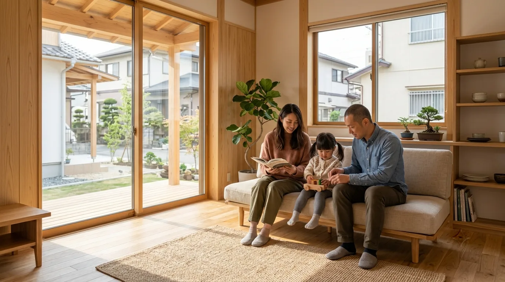

家族の時間を、長く支える家づくり。
新築・リフォームともに、地域の気候と暮らし方に合わせた設計をご提案します。完成後のメンテナンスまで、長いお付き合いを大切にしています。

福岡匠建について
GENERAL DESCRIPTION敷地の条件も、暮らし方も、
一軒ずつ違います。
新築・リフォームともに、地域の気候と暮らし方に合わせた設計をご提案します。完成後のメンテナンスまで、長いお付き合いを大切にしています。
-
N-01
気候から考える
日当たり、風の抜け、隣家との距離。同じ図面が二度と使えないのは、敷地の条件が毎回違うからです。窓の位置と軒の出は、その都度考え直します。
-
N-02
暮らし方から決める
間取りを先に決めません。朝起きてから寝るまでの動きをうかがってから、線を引きはじめます。
-
N-03
引き渡しのあとも
完成後も定期的に伺い、傷みが出る前に手を入れます。長く住むための手入れまで含めて、家づくりだと考えています。

PHOTO 02 PHOTO 03
PHOTO 03
図面目録
DRAWING INDEX — 10 SHEETSこのサイトは10枚のシートでできています。番号の頭文字が内容のまとまりを表していて、A が総則、B から E が設計と施工、F から H が保証と費用、I と J が会社のことです。知りたいところから開いてください。
A総則GENERAL1 SHEET
B — E設計と施工DESIGN & WORKS4 SHEETS
F — H保証と費用SUPPORT3 SHEETS
I — J会社COMPANY2 SHEETS
軒と、光と、風
SECTION — N.T.S.同じ図面が二度と
使えない理由。
日当たり、風の抜け、隣家との距離。敷地の条件が毎回違うので、窓の位置と軒の出は、その都度考え直します。断面で見ると、軒の深さがそのまま夏と冬の光の入り方になることが分かります。
-
S-01
夏の高い日差しは軒で切る
軒を深く出すと、高い位置から来る夏の日差しは室内に入る前で止まります。窓の前の地面に影が落ちる位置まで見て、軒の出を決めています。
-
S-02
冬の低い光は奥まで入れる
同じ軒でも、低い角度から来る冬の光はその下をくぐって、部屋の奥まで届きます。座ったときの目線の高さで庭がきれいに見える位置も、あわせて窓を決めます。
-
S-03
風は低いところから入れて高いところへ抜く
低い位置の窓から入った風は、高い位置の窓へ抜けていきます。隣家との距離を見ながら、開口の高さをずらして配置します。
SECTION — SUN & WIND断面はイメージです
- SUMMER夏の高い日差し。軒に当たって室内には入らず、窓の手前に影が落ちます。
- WINTER冬の低い光。軒の下をくぐって、床の奥まで届きます。
- WIND低い窓から入って、高い窓へ抜ける風の道。
上の断面は考え方を示す図で、実際の寸法や角度ではありません
施工事例
PLATE W-01 — W-06 W-01
モダン住宅注文住宅
W-01
モダン住宅注文住宅
 W-02
和モダン住宅注文住宅
W-02
和モダン住宅注文住宅
 W-03
平屋住宅注文住宅
W-03
平屋住宅注文住宅
 W-04
二世帯住宅注文住宅
W-04
二世帯住宅注文住宅
 W-05
リノベーションリノベーション・その他
W-05
リノベーションリノベーション・その他
 W-06
店舗・オフィスリノベーション・その他
W-06
店舗・オフィスリノベーション・その他
W-01 — W-04 注文住宅 W-05 — W-06 リノベーション・その他
施工事例を一覧で見る SHEET C-01 / PLATE W-01 — W-06 → W-02 和モダン住宅を1件まるごと見る SHEET D-01 / WORK DETAIL →家づくりの流れ
STEP 01 — 04はじめてのご相談から、お引き渡しのあとの点検まで。どの段階で何を決めるのかを、順番に並べています。決めきれないところは、決めないまま次に進めても構いません。
-
STEP 01
ご相談・プラン作成
暮らし方とご予算をうかがってから、間取りの方向性を一緒に整理します。気になっている点は、この段階で全部出してください。
-
STEP 02
現地調査・敷地確認
日当たりや風の抜け、隣家との距離を実際に見て確かめます。図面の上だけでは分からないことが、現地に立つと見えてきます。
-
STEP 03
着工・上棟
基礎から軸組まで、工程ごとに現場の状況をご報告します。壁で隠れてしまう前の姿は、この時期にしか見られません。
-
STEP 04
お引き渡し・メンテナンス
お引き渡しがゴールではありません。完成後も定期的に伺い、傷みが出る前に手を入れます。
保証・費用・ご質問
SHEET F-01 / G-01 / H-01保証とアフターサービス
お引き渡しのあと、どの時期に何を見るのか。傷みが出る前に手を入れるための考え方をまとめています。
VIEW SHEET→ G-01LAND & COST土地と費用の考え方
建物だけでは家は建ちません。土地、建物、そのほかにかかるものを分けて、順番に考えます。
VIEW SHEET→ H-01QUESTIONSよくある質問
相談のタイミング、打ち合わせの回数、工期のこと。よくいただく質問をまとめました。
VIEW SHEET→保証の期間や費用の目安など、具体的な数字は各シートでご確認ください
概要・お問い合わせ
GENERAL NOTES- NOTE 01
- NAME
- 福岡匠建社名
- NOTE 02
- ADDRESS
- 福岡県福岡市〇〇区〇〇5-3-1住所
- NOTE 03
- OPEN
- 8:30 — 17:30営業時間
- NOTE 04
- CLOSED
- 日曜日定休日
- NOTE 05
- WORKS
- 新築・リフォーム／注文住宅・リノベーション・店舗対応業務
- NOTE 06
- CONTACT
- info@example.comお問い合わせ
OPENING HOURS — DIMENSION
CLOSED : SUN ｜ 定休日 日曜日
現場と、できあがった家
PHOTO LOGFUKUOKA SHOKEN — PHOTO LOG / SAMPLE
材を刻んでいるところ、建て方の日、それから住みはじめたあとの一枚。工事のあいだは日ごとに見た目が変わるので、進み方の分かる写真をこちらに並べています。
LOG 01
 LOG 02
LOG 02
 LOG 03
LOG 04
LOG 05
LOG 03
LOG 04
LOG 05
SNSのリンク先はサンプルです。実在のアカウントではありません。